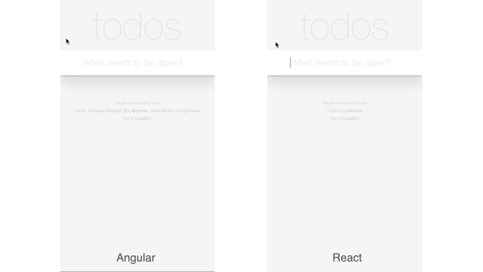

"React is the V in MVC"
Unopinionated.
It's easy to sprinkle in React Components into your technology stack or existing applicaiton.
React will map the DOM to a javascript object.
When state changes, it will compute diffs in js, and only update parts of the DOM that require re-render.
Doing things "The Angular Way"
If React is a fast car...
...then Angular is a fast car, with a different engine, that can drive to the grocery store or go off-roading. It also would require seatbelts and helmets, and months of driving school.
React does one thing and it does it well
Angular is a much more robust and opinionated MVC
Yay for new javascripts!
Start learning the new features that can make it easier and more fun than ever to write js.
Easily re-use functionality across files
/* Requires Node or CommonJS */
var React = require('react');
var Router = require('react-router').Router;
var Route = require('react-router').Route;
var IndexLink = require('react-router').IndexLink;
/* ES6 Standard */
import React from 'react';
import {Router, Route, IndexLink} from 'react-router';
JS Classes with inheritance and clean syntax
var Photo = React.createClass({
handleDoubleTap: function(e) { … },
render: function() { … },
});
modules.export.Photo = Photo;
export default class Photo extends React.Component {
handleDoubleTap(e) { … }
render() { … }
}
no more that = this; *the crowd goes wild*
this.update().bind(this,state);
update : function(state){
this…
},
this.update(state);
update = (state) => {
this…
}
Separation of concerns
Flux is a software paradigm by Facebook to reduce complexity and improve separation of concerns.
Alt is a well-documented library that implements the Flux methodology, with a simplified interface.
Nav states and URLs, Oh my!
Updates the UI based on navigation state
Adds/removes current component from DOM. Great for SPAs
Keeps URL in sync. Deep linking at any point.
Fancy term for one codebase rendered both on server and client
Serve HTML instead of blank page
Faster pagelaod performance
Improve SEO
Javascripts on your server?!?!1
ExpressJS setup in server.js
Re-uses same routes and codebase as client-side
Uses Iso, a helper library from the author of Alt, to aid in passing down React State
Pre-compile React Components that are seamlessly re-hydraded on front-end
Automate all the things!